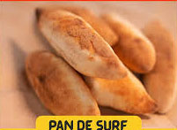
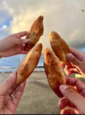
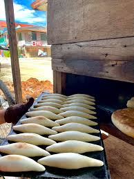

Pan de Surf is a locally crafted bread delicacy from Cantilan, known for its soft texture and sweet chocolate-filled center. The bread features a slightly crisp golden crust on the outside while remaining fluffy and moist on the inside. Its filling is rich and slightly melted when fresh, creating a satisfying contrast between texture and flavor. The size and shape make it convenient to eat as a snack or a quick meal during the day. It is widely enjoyed by both locals and visitors due to its simple yet delicious taste.
The aroma of freshly baked Pan de Surf is inviting and often draws people into local bakeries. Its flavor combines sweetness with a light, airy bread texture that appeals to many. It is commonly paired with coffee or hot beverages, especially during breakfast or afternoon breaks. The bread is usually sold warm, enhancing its taste and overall experience. Visitors often describe it as comforting and satisfying. Overall, Pan de Surf represents a unique and beloved local food specialty.


Pan de Surf originated in Cantilan as a creative product of local bakers experimenting with bread recipes. It was developed to offer a unique twist on traditional Filipino bread by incorporating a sweet filling. Over time, it gained popularity within the community due to its affordability and appealing taste. Word of mouth helped spread its reputation to nearby towns and visitors. It eventually became recognized as a signature delicacy of Cantilan.
As tourism in Surigao del Sur increased, Pan de Surf became a sought-after treat among travelers. Local bakeries began producing it in larger quantities to meet demand. The bread became closely associated with the identity of Cantilan’s food culture. Efforts have been made to maintain its traditional preparation methods despite modernization. Today, it stands as a symbol of local creativity and culinary heritage.
Pan de Surf uses simple baking ingredients that are commonly available in local bakeries. These include flour, sugar, yeast, milk, butter, eggs, and a chocolate filling. The dough is carefully prepared to achieve a soft and fluffy texture. The chocolate filling is placed inside before baking to create its signature taste. All ingredients are combined to produce a balanced flavor and texture.
The quality of ingredients plays a major role in the final product. Fresh yeast helps the dough rise properly, while butter adds richness. Milk contributes to the softness of the bread. The chocolate filling is often slightly sweet to complement the dough. Each ingredient is measured carefully to maintain consistency. Overall, the ingredients work together to create a delicious bread.


To prepare Pan de Surf, the dough is first mixed by combining flour, yeast, sugar, milk, eggs, and butter. The mixture is kneaded until it becomes smooth and elastic. It is then left to rise until it doubles in size. After rising, the dough is divided into portions and filled with chocolate. Each piece is shaped into a roll before baking.
The shaped dough is placed in an oven and baked until golden brown. The baking process allows the bread to develop its soft interior and slightly crisp crust. Once done, the bread is removed and allowed to cool slightly. It is best served warm to enjoy the melted filling. The process requires patience and careful timing. Overall, the preparation is simple but requires attention to detail.